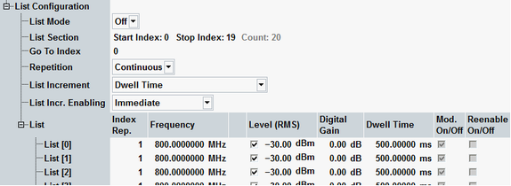
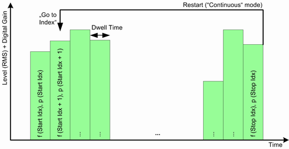
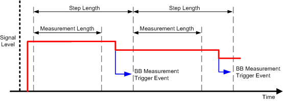
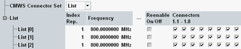
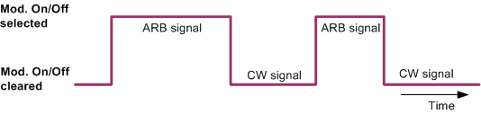
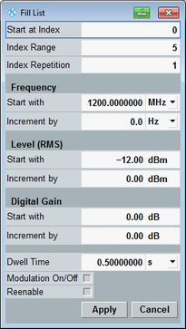

In list mode, the RF generator steps through a list of configurable frequencies and powers.

Enables or disables the list mode. This function also appears among the RF settings, see "RF Settings (Standalone Scenario Only)".
Remote command:Definition of the used step range within the list. The generator steps through all list entries between the "Start Index" and the "Stop Index" in the "Frequency / Level List". The total number of generated steps is displayed for information ("Result Count", the sum of all "Index Rep." values between the start index and the stop index).
Remote command:Defines the start index for the second and all following generator cycles in continuous mode ("Repetition: Continuous"). If this value is larger than the "Start Index", the first cycle contains one or more additional steps. These steps can be used for initialization or synchronization purposes before the actual (shorter) generator cycles start.
This parameter is unavailable in single list mode ("Repetition: Single").
Remote command:Defines how often the RF generator runs through the list section between the "Start Index" and the "Stop Index".
- Single:
The generator runs through the list for a single time.
For "List Increment: Dwell Time" (see "List Increment"), start the transmission via the "List Configuration > Execute Single" hotkey. - Continuous:
The generator cycles through the list section between the "Start Index" and the "Stop Index". The cycle is restarted automatically from the beginning of the list. "Go to Index" is available in this mode.

Defines how the RF generator steps through the list section between the "Start Index" and the "Stop Index".
- "Dwell Time":
The generator transmits at each step for the selected "Dwell Time" and then proceeds to the next step. A single list cycle ("Repetition: Single") can be started by the "List Configuration > Execute Single" hotkey.
This mode can be extended by additional trigger conditions using the parameters "List Incr. Enabling" and "Reenable On/Off".
In single list mode with "Dwell Time" increment, the generator signal is turned off after each cycle (although the generator state remains ON). "Execute Single" turns on the signal for the next cycle. In all other list modes, the signal is continuously transmitted as long as the generator is in the ON state. - "GPRF Gen<i>: ... Marker ...":
For arbitrary mode ("Baseband Mode: ARB") only: The generator cycles through the list, proceeding to the next step whenever a marker event in the processed ARB file or a user-defined marker event is encountered. The dwell time settings are ignored. See "Baseband > ARB > Trigger > Source".
This mode can be extended by additional trigger conditions using the parameters "List Incr. Enabling" and "Reenable On/Off". - "GPRF Meas<i>:Power":
The generator cycles through the list, proceeding to the next step in line with the GPRF power measurement steps. The dwell time settings are ignored. The GPRF power measurement must be running to use this list mode.
The timing of the trigger events for RF generator steps is calculated according to the "Step Length" and the "Measurement Length" of the GPRF power measurement.
Ttrigger = <measurement length> + (<step length> – <measurement length>)/2
The period of the trigger events is equal to the step length. If the measurement length is in the center of the step, the trigger events coincide with the step boundaries. The generated power steps are then synchronous to the measured steps.
- "GSM Meas<i>: Multi Evaluation":
Analogous to the previous mode, the generator steps are synchronized to the measured GSM list mode segments. This setting is effective only while the GSM multi-evaluation list mode is active. A GSM multi-evaluation measurement without list mode does not induce any RF generator steps. - "LTE Meas<i>: Multi Evaluation", "WCDMA Meas<i>: Multi Evaluation", ...:
Analogous to the previous mode, for other multi-evaluation measurements that are run in list mode.
For internally incremented lists ("List Increment" = "Dwell Time" / "GPRF Gen<i>: ... Marker ..."), this setting defines an initial trigger, that is a trigger for proceeding to the non-initial list steps.
After list cycling has started, the "List Increment" logic applies.
Note: To combine "List Increment: Dwell Time" and "Repetition: Single" with one of the "List Incr. Enabling: ...Meas..." conditions, press "List Config. > Execute Single" once. This action initializes the list mode.
- "Immediate":
The generator immediately starts cycling through the list (see "List Increment"). - "Manual":
The generator starts cycling through the list when the "List Configuration > Start List" hotkey is pressed. - "GPRF Meas<i>:Power":
The generator starts cycling through the list when a GPRF power measurement running in parallel proceeds to a new measurement step.
Exception: Before it proceeds to a retriggered generator list step ("Reenable On/Off: On", see "List"), the generator waits for a new measurement step of the GPRF power measurement.
The generator list mode cannot be initialized if no GPRF power measurement is running. - Other measurements (e.g. "GSM Meas<i>: Multi Evaluation"):
Analogous to the previous mode, however, the generator steps are synchronized to the specific measurement interval (e.g. the measured GSM timeslot sequences).
See also: "Statistical Settings"
This parameter is visible if you select a connector bench with several connectors in the routing settings. The availability of connector benches depends on the instrument model.
- "Global": The connectors are activated via the node "Connectors". The same connectors are used for all list entries. See "Connectors".
- "List": The connectors are activated individually for each list entry.

Definition of up to 2000 steps. The actual RF generator level at each frequency is equal to the "Level (RMS)" plus the "Digital Gain". The value range for the frequency covers the entire configurable value range of the instrument, the level range depends on the selected RF connector.
Each step can be repeated a selectable number of times ("Index Rep."), so the total number of steps can exceed the maximum number of list entries.
- "Index Rep.": Number of repetitions of each frequency/level step. The "Index Rep." simplifies the configuration of the list if repeated steps are desired.
- "Frequency": RF frequency of the GPRF generator.
- "Level (RMS)": Level of the transmitted RF signal. Use different RMS level settings if you need large power steps.
- "Digital Gain": Provides direct access to the IF levels. The relationship between the digital gain and the total RF generator level is highly linear: Use different digital gain values at equal "Level (RMS)" if you want to generate power steps with maximum accuracy over a limited dynamic range.
- "Dwell Time": Transmission time on each frequency/level step in "Auto" or "Single" mode. The value is not used in the other list modes. The total time for the generator to step through a single cycle is the sum of all dwell times.
- "Mod. On/Off": Can be used to generate a discontinuously modulated ARB generator signal: The baseband settings (ARB file contents) are ignored during frequency/level steps where "Mod. On/Off" is cleared. The ARB file download continues irrespective of the "Mod. On/Off" settings. The setting is used in "ARB" baseband mode only.

- "Reenable On/Off": Enable or disable retriggered generator list steps. The setting is available if a measurement is selected for "List Incr. Enabling": The GPRF generator waits for a new trigger event from the measurement (start of next measurement step) before it proceeds to a re-enabled (retriggered) list step.
List steps which are not reenabled are reached after the dwell time or after the generator detects a marker signal, depending on the selected "List Increment". - "CMWS": This column is only relevant for "CMWS Connector Set" = "List".
It configures which connectors of the selected connector bench are active. The generated signal is available at all active connectors.
Note: If a list step contains an "Index Rep." > 1 in combination with an enabled retrigger, the retrigger setting applies to the first frequency/level step in the index repetition range only. The following list definitions are equivalent.
List [#] | Index Rep. | Frequency | Exp. nom. power | Re-enable |
|---|---|---|---|---|
0 | 1 | 1000 MHz | 0 dBm | on |
1 | 1 | 1000 MHz | 0 dBm | off |
2 | 1 | 1000 MHz | 0 dBm | off |
3 | 1 | 1000 MHz | –30 dBm | off |
4 | 1 | 2000 MHz | 0 dBm | on |
5 | 1 | 2000 MHz | 0 dBm | off |
6 | 1 | 2000 MHz | 0 dBm | off |
7 | 1 | 3000 MHz | 0 dBm | on |
List [#] | Index Rep. | Frequency | Exp. nom. power | Re-enable |
|---|---|---|---|---|
0 | 3 | 1000 MHz | 0 dBm | on |
1 | 1 | 1000 MHz | –30 dBm | off |
2 | 3 | 2000 MHz | 0 dBm | on |
3 | 1 | 3000 MHz | 0 dBm | on |
Use the hotkeys associated with the "List Config." softkey to operate the GPRF generator in list mode.
"Start List": In continuous repetition mode (see "Repetition"), for lists incremented by dwell time or ARB file marker (see "List Increment") and with "Manual" list increment enabling (see "List Incr. Enabling"), the "List Config. > Start List" hotkey initiates the list cycling.
"Execute Single": In single repetition mode and for lists incremented by dwell time (see "List Increment"), the "List Config. > Execute Single" hotkey initiates a single list cycle.
"Restart List": The "List Config. > Restart List" hotkey restarts the list generator at the first frequency/level step. This hotkey is particularly useful for fast remote control operation (no need to turn the generator off and on again).
"Fill List...": The "List Config. > Fill List..." hotkey opens a dialog which considerably simplifies the configuration of the frequency/level list. The dialog defines a list segment of arbitrary start index ("Start at Index") and length ("Index Range"). Within the segment, the frequency, level, and digital gain increases or decreases in equal steps. The "Dwell Time", "Modulation On/Off" and "Reenable" settings (if used) are equal.
